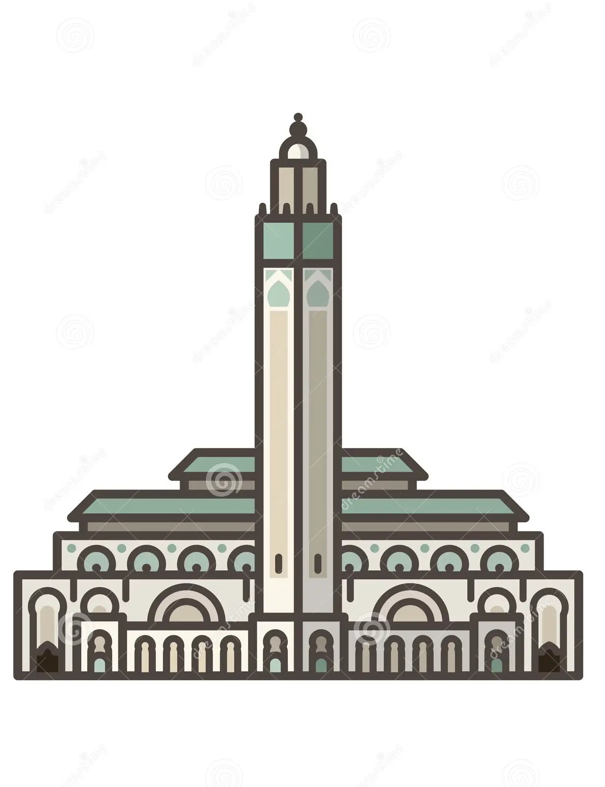
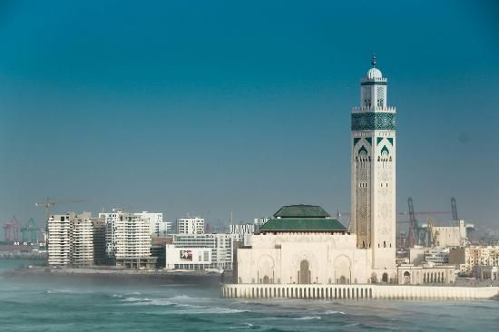
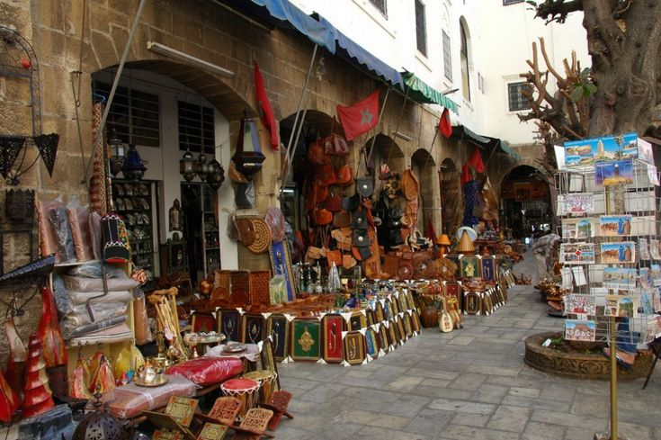

Casablanca

Casablanca (/ka.za.blɑ̃.ka/, en espagnol : /kasaˈβlaŋka/ ; en amazighe : ⵜⴰⴷⴷⴰⵔⵜ ⵜⵓⵎⵍⵉⵍⵜ (taddart tumlilt)5 ; en arabe : الدار البيضاء6, ad-Dār al-Bayḍā’, /adˈdaːru ɫbajdˤaːʔ/) est une ville située au centre-ouest du Maroc,
sur la côte atlantique, à environ 80 km au sud de Rabat, la capitale administrative. Capitale économique du pays, siège de la région Casablanca-Settat7,8, elle est la plus grande ville du Maghreb par sa population9 ;
lors du recensement de 2014, sa population était de 4 359 818 habitants3, faisant d'elle la ville la plus peuplée du royaume, et celle de son agglomération s'élevait à 4 570 750 habitants3,10.
Ses habitants ont pour gentilé Bidawa, Casawa ou Casaoui en arabe marocain.
Sur le plan administratif, son territoire — à distinguer de celui de l'agglomération incluant sa banlieue — d'une superficie de 384 km24, correspond à celui de la municipalité de Casablanca qui est divisée en seize
arrondissements répartis dans huit préfectures. Le Méchouar de Casablanca où siège un palais royal forme sa propre micro-municipalité11.
La ville possède un patrimoine architectural moderne important grâce à la diversité architecturale qu'elle connaît pendant le xxe siècle et qui fait d'elle le « laboratoire de la modernité » d'une nouvelle génération
d'architectes qui ont étudié à l'École nationale supérieure des beaux-arts de Paris12.
Casablanca possède l'une des plus grandes mosquées du monde, la mosquée Hassan-II, emblème architectural dont le minaret culmine à plus de 200 m.
Ville au passé turbulent, 440 ans après avoir été rasée par les Portugais, Casablanca fut quasiment détruite lors du bombardement de la ville par les Français en 1907 lors de l'insurrection de Casablanca faisant des
milliers de victimes et constituant l'élément déclencheur de la campagne du Maroc.
Durant les années de plomb sous le règne du roi Hassan II, la ville est également assiégée par l'armée pendant les émeutes de 1981, faisant des centaines de victimes.
Casablanca connait aujourd'hui une période de croissance économique, marquée par de grands chantiers d'aménagement du territoire : éradication des quartiers insalubres, construction du réseau de tramway, développement
du réseau autoroutier et ferré avec l'accueil de la première Ligne à Grande Vitesse d'Afrique, création du nouveau centre d'affaires de Casa-Anfa.
Casablanca compte parmi les cinq premières villes globales du continent africain, classée ville mondiale bêta au même titre que Le Cap et Nairobi, toutes trois précédées par Le Caire (beta+) et Johannesbourg (alpha-)13..
Meilleures attractions à Casablanca :
 La mosquée Hassan-II (arabe : مسجد الحسن الثاني (masjid al-Hassan ath-thani); est une mosquée située à Casablanca (Maroc). Érigée en partie sur la mer, elle est un complexe religieux et culturel, aménagée sur neuf hectares et comporte une salle de prières, une salle d'ablutions, des bains, une école coranique (madrasa), une bibliothèque, un musée1, et une Académie des arts traditionnels2..
 Le quartier de Habous se développe pendant le protectorat français1, principalement des années 1920 aux années 1930 pour accueillir plusieurs familles de négociants en provenance de diverses régions du Maroc. Ce mouvement migratoire est provoqué par la politique du Maréchal Lyautey qui tient à séparer les zones de résidences des Européens et celles des Marocains3.